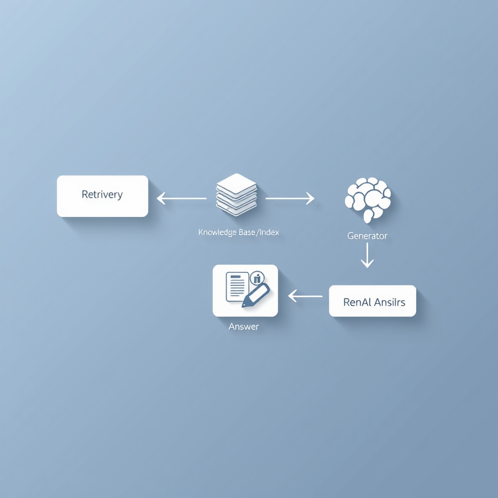
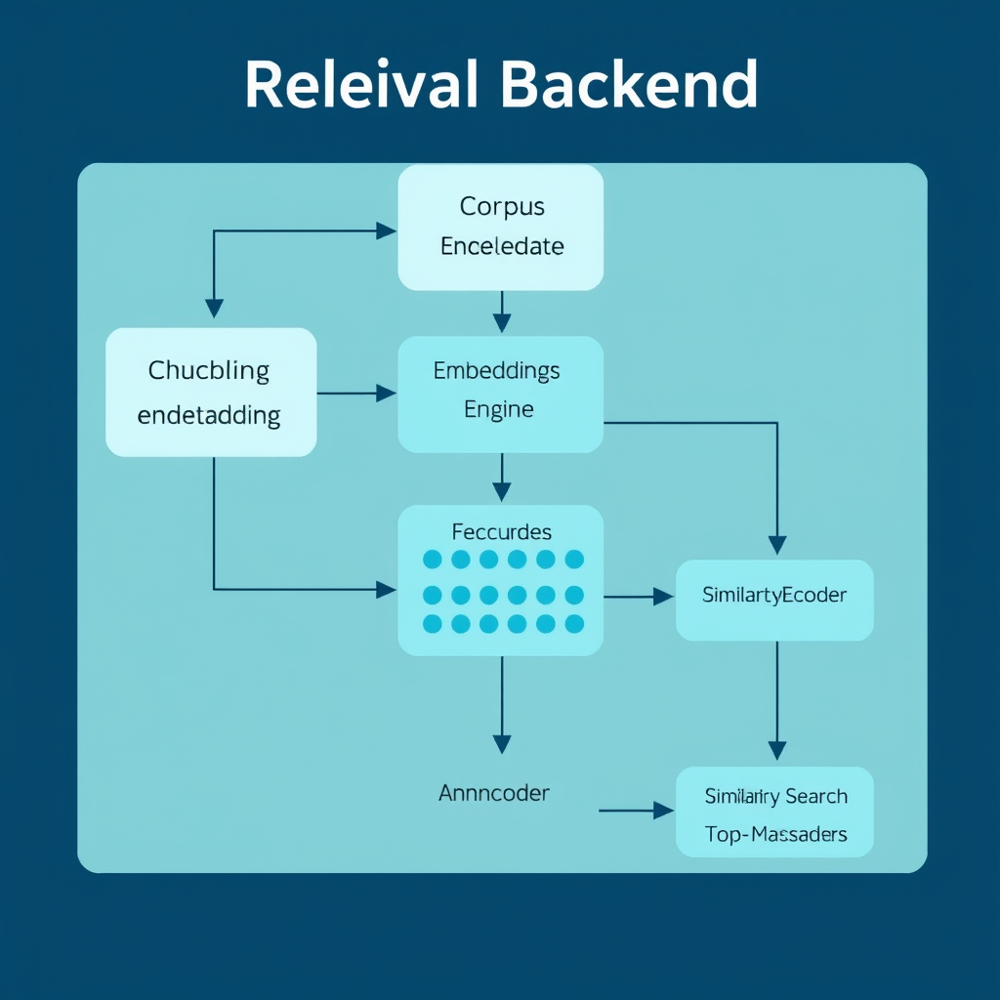
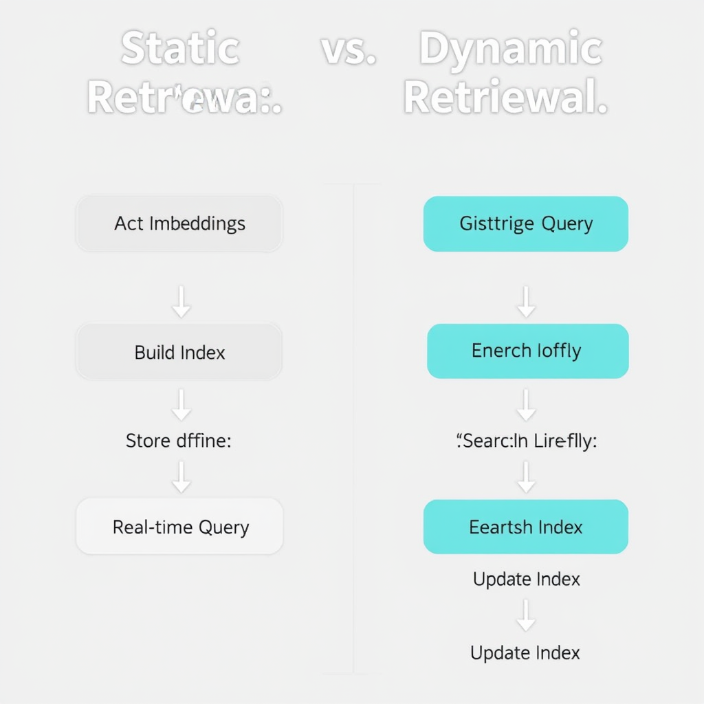

**
---
Introduction to Retrieval‑Augmented Generation
Generative AI models—large language models (LLMs), diffusion models, and their kin—have demonstrated remarkable abilities to produce fluent text, code, and images. Yet their knowledge is bounded by the data seen during pre‑training, and they can hallucinate facts that are outdated or simply incorrect. Retrieval‑Augmented Generation (RAG) tackles this limitation by coupling a generative model with an external knowledge store. At inference time the system first **retrieves** relevant documents (or passages) from a curated index and then **generates** a response conditioned on both the original prompt and the retrieved context. The result is a model that can answer up-to-date questions, cite sources, and maintain higher factual fidelity while still leveraging the creativity of the underlying generator.
---
Core Components of RAG
| Component | Role | Typical Implementation |
|-----------|------|------------------------|
| **Retriever** | Finds the most relevant pieces of external knowledge for a given query. | Dense vector similarity (e.g., FAISS, ScaNN) using embeddings from a bi‑encoder; sparse lexical search (BM25); hybrid approaches. |
| **Knowledge Base / Index** | Stores the corpus to be searched—documents, code snippets, tables, or multimodal assets. | ElasticSearch, Pinecone, Milvus, or custom on‑disk FAISS indices. |
| **Generator** | Produces the final output, ingesting the original prompt plus retrieved context. | Any LLM (e.g., GPT‑4, LLaMA, Claude) or multimodal generator; often wrapped in a “prompt template”. |
| **Fusion Layer (optional)** | Merges multiple retrieved passages into a single context or decides which passages to attend to during generation. | Concatenation, hierarchical attention, or learnable gating networks (e.g., Fusion‑in‑Decoder). |
| **Evaluation & Feedback Loop** | Monitors factual accuracy, latency, and relevance; feeds signals back to improve retrieval or prompting. | Automated metrics (R‑Precision, BLEU, Faithfulness scores) and human‑in‑the‑loop review. |
---
Retrieval Phase: Indexing and Querying
* **Chunking** – Long documents are split into manageable passages (e.g., 200‑300 tokens) to improve recall. Overlap between chunks preserves context.
* **Metadata Enrichment** – Attach timestamps, source IDs, or domain tags to enable filtered retrieval (e.g., “only medical literature from 2022‑present”).
* Use a **bi‑encoder** (often a smaller transformer such as MiniLM or Sentence‑BERT) to encode each passage into a dense vector.
* For hybrid retrieval, also store lexical tokens for BM25‑style scoring.
* Load vectors into an **approximate nearest‑neighbor (ANN)** index (FAISS IVF‑PQ, HNSW).
* Persist the index alongside a mapping from vector IDs to raw passages and metadata.
* Encode the user query with the same bi‑encoder.
* Retrieve the top‑k passages by cosine similarity (common values: k = 5‑20).
* Optionally re‑rank using a cross‑encoder that jointly attends to query and passage for higher precision.
* Pre‑compute and cache embeddings for frequent queries.
* Deploy the index on GPU or use optimized CPU libraries to keep end‑to‑end latency under 500 ms for most interactive applications.
---
Generation Phase: Prompting and Decoding
* **Instruction** – The user’s original request (e.g., “Explain the impact of quantum computing on cryptography”).
* **Retrieved Context** – Concatenate the top‑k passages, optionally prefixed with source citations (`[Source 1]`).
* **Template Example**:
```
You are an expert AI researcher. Use the following excerpts to answer the question. Cite sources inline.
Excerpts:
...
Question: <user query>
Answer:
```
* **Deterministic** – Greedy or beam search (beam width 3‑5) for concise, factual answers.
* **Stochastic** – Temperature (0.2‑0.7) and top‑p (0.9) when creativity is desired, but keep temperature low to avoid hallucination.
* Post‑process the generated text to insert citations that map back to the retrieved passages (`[1]`, `[2]`).
* Some generators (e.g., OpenAI’s `function calling`) can be instructed to output a structured list of source IDs, simplifying downstream validation.
* Run the output through a content filter or a factuality checker (e.g., a separate classifier) before presenting to the user.
---
Integration and Prompt Engineering
* **Modular Architecture** – Wrap the retriever and generator as micro‑services behind a unified API. This enables swapping out components (e.g., upgrading the LLM) without touching the retrieval pipeline.
* **Prompt Templates as Code** – Store templates in a version‑controlled repository. Use Jinja2 or similar templating engines to inject dynamic variables (k, citation style, domain‑specific instructions).
* **Dynamic Retrieval Depth** – Adjust `k` based on query complexity; short factual questions may need only 1‑2 passages, while multi‑step reasoning benefits from more context.
* **Hybrid Retrieval** – Combine dense and sparse scores: `score = α * dense_sim + (1‑α) * bm25`. Tune α on a validation set.
* **Few‑Shot Demonstrations** – Include a few examples of “question → answer with citations” within the prompt to steer the generator toward the desired format.
---
Use Cases and Applications
| Domain | Typical RAG Deployment | Value Delivered |
|--------|------------------------|-----------------|
| **Customer Support** | Retrieve policy documents, FAQs, and recent ticket logs; generate personalized replies. | Faster resolution, reduced escalations, up‑to‑date compliance. |
| **Enterprise Knowledge Management** | Index internal wikis, code repositories, and meeting transcripts; answer employee queries. | Knowledge democratization, lower onboarding time. |
| **Healthcare** | Pull latest research articles, drug labels, and clinical guidelines; produce evidence‑backed explanations. | Improved decision support, audit trails via citations. |
| **Legal & Compliance** | Search statutes, case law, and contract clauses; draft summaries with source references. | Higher factual reliability, easier regulatory audits. |
| **Education** | Retrieve textbook sections and scholarly papers; generate study guides or answer homework questions. | Adaptive tutoring with verifiable sources. |
---
Performance Metrics and Evaluation
* **Recall@k** – Fraction of queries where at least one relevant passage appears in the top‑k.
* **Mean Reciprocal Rank (MRR)** – Emphasizes early relevance.
* **BLEU / ROUGE** – Compare against reference answers (useful for benchmark datasets).
* **Faithfulness Metrics** – `FactCC`, `Q²`, or LLM‑based evaluators that score consistency with retrieved context.
* **Answer Accuracy** – Exact match or F1 on QA benchmarks (e.g., Natural Questions, HotpotQA).
* **Citation Accuracy** – Percentage of statements correctly linked to the supporting passage.
* **Latency** – Average time from user query to final answer (target < 1 s for chat, < 3 s for complex queries).
* **Throughput** – Queries per second the system can sustain under load.
* **Cost per Query** – Compute cost of embedding generation + LLM inference; useful for budgeting in production.
A robust evaluation pipeline runs the same test set through multiple retrieval‑generation configurations, logs all metrics, and visualizes trade‑offs (e.g., higher `k` improves recall but raises latency).
---
Limitations and Challenges
* **Hallucination Despite Retrieval** – If the generator over‑weights its internal language model, it may ignore retrieved facts. Mitigation: use **fusion‑in‑decoder** architectures or explicit grounding losses during fine‑tuning.
* **Stale or Noisy Knowledge Bases** – Out‑of‑date documents lead to incorrect answers. Implement automated ingestion pipelines that refresh the index daily or hourly for time‑sensitive domains.
* **Scalability of Dense Indexes** – Billion‑scale corpora require hierarchical indexing (IVF‑OPQ) and distributed storage; otherwise latency spikes.
* **Bias Propagation** – Retrieval mirrors the biases present in the source corpus. Curate the knowledge base and apply bias‑mitigation filters before indexing.
* **Evaluation Gaps** – Standard QA metrics do not capture citation correctness or user trust. Complement with human evaluations focused on factuality and usefulness.
---
Future Directions
---
Conclusion
Retrieval‑Augmented Generation bridges the gap between the raw creative power of large generative models and the need for up‑to‑date, verifiable knowledge. By carefully engineering each stage—indexing, dense retrieval, prompt construction, and decoding—practitioners can build systems that answer questions with citations, reduce hallucinations, and adapt quickly to new information. While challenges around scalability, bias, and evaluation remain, the rapid evolution of joint training methods, multimodal retrieval, and privacy‑preserving technologies promises a future where RAG becomes the default backbone for trustworthy generative AI applications.
---


